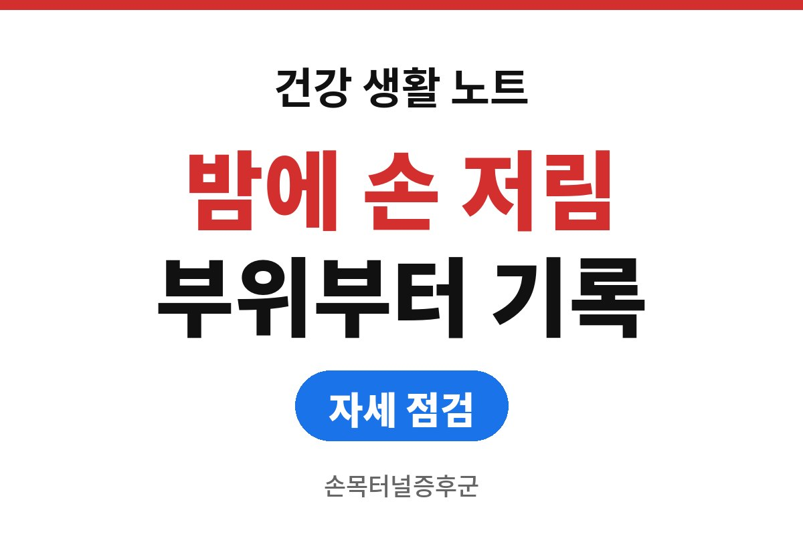
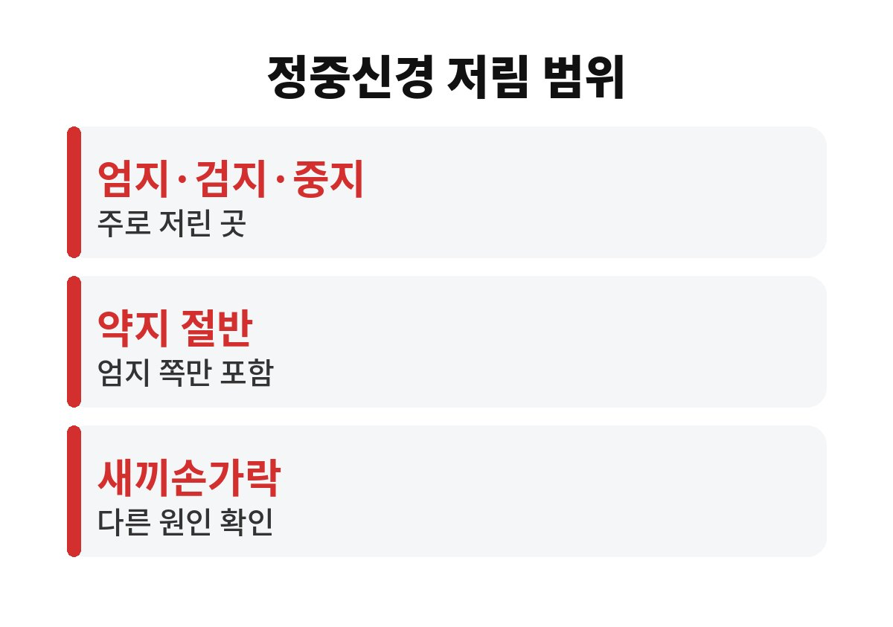
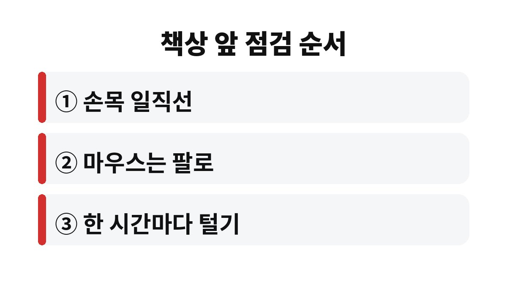

손목터널증후군은 엄지에서 약지 절반까지 저리고, 특히 밤이나 새벽에 증상이 심해지는 것이 가장 흔한 신호다.
질병관리청 국가건강정보포털은 이 질환을 손목 안쪽 통로에서 정중신경이 눌려 생기는 문제로 설명한다.
키보드와 마우스를 오래 쓰는 날이 이어진 뒤 손이 저리다면 어느 손가락이 저린지부터 살펴보는 것이 출발점이다.
정중신경은 엄지, 검지, 중지와 약지의 엄지 쪽 절반으로 이어진다.
그래서 손목터널증후군이 있으면 이 범위가 저리거나 따끔거리는 경우가 많다.
손바닥 전체가 아니라 손가락 끝부터 시작하는 저림이라는 점이 특징이다.
아침에 일어나 손을 털어 내면 잠시 나아지는 양상도 자주 언급된다.
새끼손가락 쪽이 저린 경우는 다른 신경 경로가 눌렸을 가능성이 있어 양상이 다르다.
목이나 팔꿈치 쪽 문제가 손 저림으로 나타나는 일도 있다.
집에서 스스로 부위를 단정하기보다 저린 손가락을 메모해 진료 때 보여 주는 편이 정확하다.
| 저린 부위 | 의심해 볼 방향 | 먼저 할 일 |
|---|---|---|
| 엄지·검지·중지 | 손목의 정중신경 압박 | 저린 시간대 기록 |
| 약지 엄지 쪽 절반 | 정중신경 범위에 포함 | 손목 사용량 점검 |
| 새끼손가락 쪽 | 다른 신경 경로 가능성 | 진료 때 부위 설명 |
| 양쪽 손 모두 | 목·전신 원인 구분 필요 | 전문의 상담 |

손목을 반복해서 굽히거나 진동이 있는 도구를 오래 쥐는 일이 이어지면 손목 안쪽 통로에 압력이 쌓일 수 있다.
사무 작업뿐 아니라 스마트폰을 한 손으로 오래 들고 있는 습관, 무거운 장바구니를 손목에 걸어 드는 습관도 같은 방향의 부담이다.
당뇨나 갑상선 질환처럼 다른 질환이 있거나 임신 중일 때 증상이 나타나는 경우도 있어서, 원인이 손 사용량 하나만은 아니다.
예를 들어 저녁마다 침대에 누워 한 손으로 스마트폰을 들고 영상을 보다가 잠드는 사람이라면, 손목이 꺾인 채 오래 있는 시간이 하루 중 가장 길 수 있다.
이런 경우는 책상 자세를 고치는 것만으로는 부족하고 눕는 자세도 함께 바꿔야 한다.
손목을 위로 꺾은 채 타자를 치거나 손목을 책상 모서리에 얹고 마우스를 잡으면 손목 안쪽 통로가 좁아진 상태로 오래 버티게 된다.
하루 사용 시간 못지않게 꺾인 각도가 문제를 키운다.
다음 순서로 책상 앞 자세를 바꿔 볼 수 있다.

자는 동안 손목이 구부러진 채 눌리면 저림이 밤에 두드러진다.
베개 밑에 손을 넣거나 손목을 접은 채 엎드려 자는 자세는 피하는 쪽이 낫다.
저림으로 깼을 때는 손을 심장보다 낮게 내려 털고 손목을 편 상태로 잠시 쉰다.
한쪽 손만 저리다면 그 손을 더 많이 쓰는 쪽일 가능성이 크고, 양손이 함께 저리다면 목이나 전신 요인도 같이 확인해야 한다.
시중에 손목 보조기도 있지만 쓰는 시간과 방식은 사람마다 달라서, 사용 여부는 진료를 받은 뒤 정하는 것이 안전하다.
이 방법들은 증상을 줄이는 생활 조정일 뿐 진단이나 치료를 대신하지 못한다.
자세를 바꾸고 손 사용을 줄여도 저림이 몇 주 이어지거나 점점 잦아지면 정형외과나 신경과 진료를 받는다.
병원에서는 증상 부위와 손목을 두드리거나 꺾을 때의 반응을 살피고 필요하면 신경 전도 검사를 한다.
단추를 채우기 어렵거나 물건을 자꾸 떨어뜨리고 엄지 아래 근육이 마른 듯 보이면 신경 눌림이 오래 이어졌다는 신호일 수 있다.
이 단계는 생활 습관만으로 기다리지 말고 되도록 빨리 전문의에게 확인받아야 한다.
치료는 증상의 정도와 신경 눌림의 진행에 따라 손 사용을 줄이는 보존적 방법부터 시작해 필요할 때 다른 방법을 단계적으로 고려한다.
어떤 방법을 쓸지는 검사 결과를 본 의사가 정하는 일이라서, 인터넷에서 본 방법을 그대로 따라 하기보다 진료 때 지금 쓰는 자세와 하루 사용 시간을 함께 말해 주는 편이 낫다.
직업상 손목을 쓰는 일을 당장 줄이기 어렵다면 그 사정도 숨기지 않고 전하면 현실적인 조정안을 받기 쉽다.
이번 주에는 저릴 때마다 어느 손가락이었는지 시간과 함께 적어 두면 된다.
그 기록이 진료실에서 가장 빠르게 원인을 좁혀 주는 자료가 된다.
참고 자료: 질병관리청 국가건강정보포털 「수근굴(수근관) 증후군」(2026년 11월 확인)
※ 2026년 기준 공식 기준을 바탕으로 정리한 일반 건강 정보이며, 증상이 계속되거나 지병이 있다면 전문의와 상담하길 바란다.